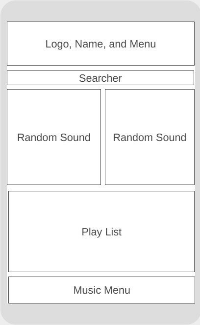
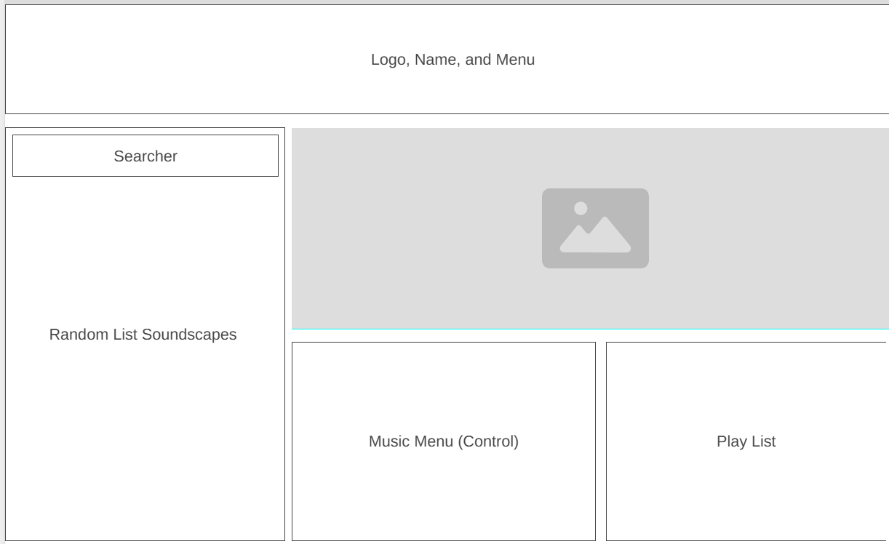

Site Name
Name: EcoSound Library
The name "EcoSound Library" combines ecological ("Eco") with an audio repository ("Sound Library"). It clearly conveys to users that the platform hosts a collection of natural ambient soundscapes for wellness and relaxation.
Site Purpose
The EcoSound Library is a interactive web portal designed to provide natural soundscapes such as rain, ocean waves, forest ambiance, and mountain winds to help users reduce stress, improve focus, and sleep better.
Target Audience Scenarios
- Scenario 1: As a student studying late at night, how can I search the library catalog for ambient rain sounds and overlay them with a lofi music track to maintain focus?
- Scenario 2: As a user unwinding after work, how can I search for ocean soundscapes, adjust individual volume levels across multiple sound channels, and play them smoothly on my mobile phone?
Color Palette
#1E3A1A
Deep Forest Green (Header background & main branding)
#254E20
Forest Green (Headings & container borders)
#F4F7F4
Muted Soft Sage (Page background color)
Typography
Heading Font: Montserrat — Used for <h1> and <h2> section titles to establish a clean hierarchy.
Body Text Font: Open Sans — Applied to paragraphs, list items, and general body text for maximum legibility.
Wireframes

